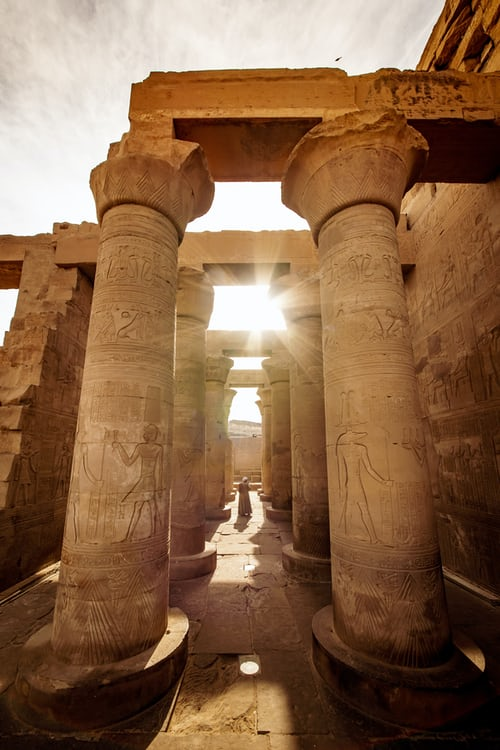

Around Egypt
Around Egypt
Luxor is often called the world’s greatest open-air museum, but that comes nowhere near describing this extraordinary place. Nothing in the world compares to the scale and grandeur of the monuments that have survived from ancient Thebes. The setting is breathtakingly beautiful, the Nile flowing between the modern city and west-bank necropolis, backed by the enigmatic Theban escarpment. Scattered across the landscape is an embarrassment of riches, from the temples of Karnak and Luxor in the east to the many tombs and temples on the west bank. Thebes’ wealth and power, legendary in antiquity, began to lure Western travellers from the end of the 18th century. Depending on the political situation, today’s traveller might be alone at the sights, or be surrounded by coachloads of tourists from around the world. Whichever it is, a little planning will help you get the most from the magic of Thebes.
